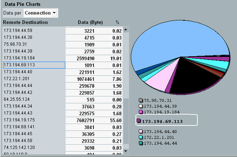
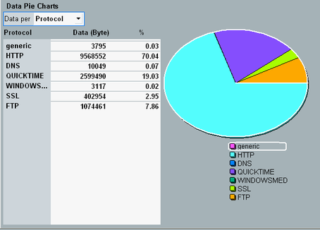
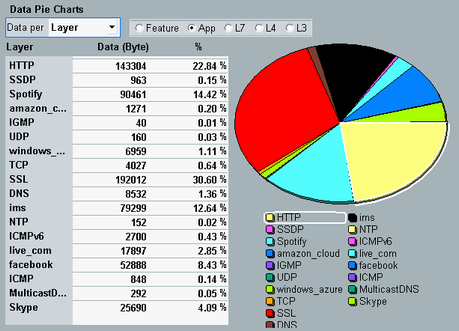
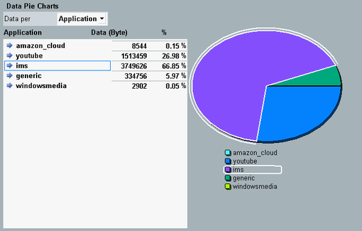
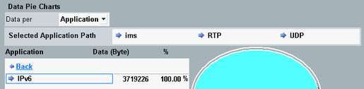

This view analyzes the amount of data transported since the measurement was started.
The results are displayed as a list and as a pie chart. For each list entry, the transported data is given as absolute number and as percentage of the total transported data. All values indicate the sum of downlink and uplink.
The list and the pie chart are linked. Select an entry in the list to highlight the corresponding part of the pie chart.
At the top of the view, you can select a view variant "Data per ...". The specifics of the individual categories are described in the following sections.
The view provides an overview of the amount of data transported via the individual connections since the measurement was started.

The term "Remote Destination" refers to the partner destination of the DUT (DUT at one end of the connection, "Remote Destination" at the other end).
Remote command:The view provides an overview of the amount of data transported via the individual protocols since the measurement was started.

The view provides a layer-based overview of the amount of data transported since the measurement was started.

At the top, select the layer you are interested in.
- Feature layer: audio, video, SMS, ...
- Application layer: Facebook, IMS, YouTube, Skype, ...
- Layer 7: SIP, RTP, HTTP, ...
- Layer 4: TCP, UDP, ICMP, IGMP, ...
- Layer 3: IPv4 or IPv6
The packets are analyzed at the selected layer. If a packet cannot be assigned at this layer, it is analyzed at the next lower layer. This step is repeated until the packet can be assigned to a category (feature, application or protocol).
If you select the application layer for example, the results list mainly applications. For packets that cannot be assigned to an application, the L7 protocol is listed. And for packets that cannot be assigned to a L7 protocol, the layer 4 protocol is listed.
Remote command:The view provides an overview of the amount of data transported via the individual applications since the measurement was started.

You can select an application and display information for a lower layer.
- Double-click an entry in the "Application" column, or
- Select an entry in the "Application" column and press the hotkey "Detailed View"
In the following example, this action has been performed three times, to navigate from the application layer (IMS) through layer 7 (RTP) and layer 4 (UDP) to layer 3 (IPv6).
This path is displayed as "Selected Application Path".

- Click "Back" or press the hotkey "Back"